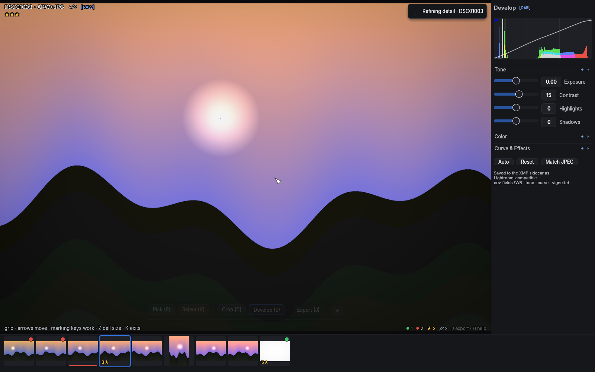
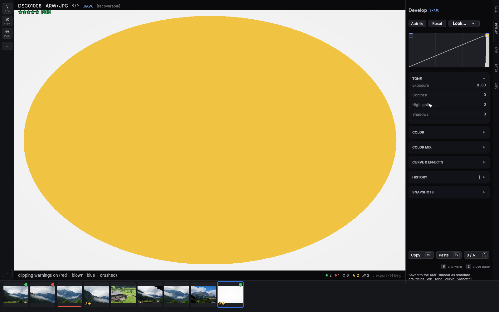

Develop
E opens the develop panel. Its one-shot verbs sit right under the
title as a full-width quick row — Auto, Reset, and a look
picker on RAW-paired photos — and a footer row carries Copy,
Paste and B / A (the same actions as Shift+C, Shift+V and
\). While the panel is closed, resting the pointer on the DEVELOP
spine tab (right edge) offers Auto tone and Reset without opening the
panel at all. Adjustments render on the GPU, so every
slider is realtime at any image size, and everything persists to the XMP
sidecar in the standard crs: schema — editors that read it apply
your edits on import.

RAW-paired photos develop the RAW
Culling always shows the camera JPEG — but when a photo has a RAW file
beside it, opening the develop panel switches the image to a fresh
demosaic of the RAW, developed with the file's own white balance and
color matrix. A soft render appears near-instantly and sharpens in place
a moment later; close the panel and the plain JPEG is back — your
adjustments were graded against the flat RAW rendition, so they are
deliberately not re-applied to the already-cooked camera JPEG (they
would read overbaked there). The edits aren't lost: they live in the
develop panel and in exports,
which bake a graded photo from the RAW (a photo you haven't graded
exports its camera JPEG instead — the picture you culled — even while
this panel shows its RAW) — and a quiet [edited] tag in the top-left overlay row marks
any photo carrying RAW edits you can't currently see. Only the crop
follows you out of the panel: geometry means the same thing on both
files. The tag next to
the panel's title says which one you're looking at: [RAW] or
[JPEG] — it always describes the pixels actually on screen, so a
photo whose RAW is still decoding (or downloading) reads [JPEG] until
the real thing lands. The same moment, an accent-colored [RAW]
tag appears over the photo itself, in the top-left row next to
[stack] and [before] — inside a stack of mixed RAW and JPEG
members it appears and disappears per member as you step through, so
there's never a doubt about which file you're grading.
Expect the RAW to look different from the JPEG: flatter and often darker. The camera's JPEG has its own cooked tone curve, sharpening and lens corrections baked in; the RAW render is the neutral starting point your adjustments build on (lens correction is applied from the file's own parameters — see the slider list below). The histogram follows the same rule as the tag — it describes whichever image is displayed.
Photos with no RAW (plain JPEG, HEIC) keep developing the JPEG exactly
as before, and a RAW that can't be decoded falls back the same way — the
tag tells the truth either way. On a server source the RAW original
downloads first ("Downloading RAW" in the pending-work pill); the panel
opens instantly on the server preview and the tag flips to [RAW] when
the real pixels land. The download is a one-time cost per photo.
White balance becomes real in RAW mode. On a JPEG, Temp and Tint
are relative nudges (−100..+100 around 0) — a JPEG has no true white
balance left to change. On a RAW, the Temp slider turns into an actual
Kelvin scale (2000–25000, log-spaced so the everyday 3000–9000 band
gets most of the travel) whose home position is the file's As Shot
white balance; hover the slider to see it, double-click to return to
it. Tint stays −100..+100, zero meaning As Shot. The number format is
the tell: "5500K" is a RAW, "+12" is a JPEG. The two settings are
stored separately per photo — RAW-mode edits write the real
crs:Temperature/crs:Tint fields, JPEG-mode edits keep the
Incremental pair, and neither ever touches the other.
The histogram is a control
The live RGB histogram at the top reflects your adjustments, and you can grab it directly:
- Drag in the left third to move Shadows, the middle for Exposure, the right third for Highlights. The tone you press on tracks the pointer — it feels like dragging the histogram mass itself.
- Double-click a zone to reset that parameter.
- The histogram is computed over the cropped region, so it describes the photo you're actually keeping.
The curve
The white line across the histogram is the tone curve: for every input tone (left = black, right = white) it shows the tone your sliders turn it into (bottom = black, top = white). Untouched, it lies on the faint diagonal — except a small dip near white, the built-in highlight shoulder that rolls bright pushes off softly instead of clipping them. Raise Exposure and the whole line lifts; add Contrast and it steepens into an S; pull Highlights and the top end bends down. While you drag a tonal slider the line brightens to the accent color, and dragging one of the four Tone curve sliders also thickens the stretch of the curve that slider owns, so you can see exactly where "Darks" ends and "Lights" begins. White balance, Vibrance/Saturation and Vignette don't move the line — they change color or corners, not tones.
Sliders drag relative to where you grab — the value moves with your pointer's travel, damped so a wide drag is a moderate change, which makes fine adjustment easier and means a stray click never jumps the value. For an exact number, click the value and type it; double-click the track to reset; and hovering a slider and scrolling nudges it — slower still, for the finest work.
Sections
The sliders live in four collapsible sections — Tone (Exposure, Contrast, Highlights, Shadows), Color (Temp, Tint, Vibrance, Saturation), Color Mix (per-hue Hue/Saturation/Luminance) and Curve & Effects (the tone curve regions, Vignette, and — while a RAW is on screen — Denoise and Lens correction). Click a header to collapse or expand it; the app remembers your arrangement across restarts. On a fresh install only Tone is open — the every-photo section — keeping the pane compact. A collapsed section can never hide an edit silently: a small accent dot on the header means something inside is off its default.
The sliders
-
Temp / Tint — white balance: Temp seesaws red/blue (negative cools, positive warms), Tint moves the green–magenta axis. Neutral grays keep their brightness while the color shifts.
-
Pick gray point (
Q) — the white-balance eyedropper, at the top of the Color card. Click it (or pressQ), then click something in the photo that should be neutral gray (a gray card in the shot is ideal): culler sets Temp and Tint so that point renders neutral — in Kelvin on a RAW, as slider offsets on a JPEG — and the status line names the result. A blown or crushed spot is refused ("that point is clipped") and the picker stays armed so you can try another;Esccancels, and moving to another photo quietly puts the tool away. To carry one reference across a whole series shot in the same light, pick once and useShift+C/Shift+Vto copy the settings along. -
Exposure — brightness in EV, in linear light, with a soft shoulder so pushed highlights bloom instead of clipping flat.
-
Contrast — an S-curve around the midtones.
-
Highlights / Shadows — recover the bright end or lift the dark end. Up to ±50 the effect follows each pixel's own tone; beyond ±50 it becomes neighborhood-aware: a strong shadow lift brightens a dark doorway without washing out the bright wall next to it — strong pulls stay local instead of flattening the frame.
-
Vibrance / Saturation — Vibrance boosts muted colors more than already-vivid ones (protecting what's already saturated); Saturation is uniform. −100 Saturation is black & white.
-
Color Mix — eight per-hue bands (Red · Orange · Yellow · Green · Aqua · Blue · Purple · Magenta), where Hue rotates a range of hues, Saturation deepens or mutes it, and Luminance brightens or darkens it — leaving the other colors alone. Reach for it to lift a sky without touching skin, or calm one loud color. It works on any photo, RAW or JPEG, and is part of what gives a camera look its per-hue colour rendering rather than just its tone. A toggle at the top of the section picks how you steer the eight bands — and it remembers your choice:
- Sliders — pick a swatch, then adjust its Hue / Saturation / Luminance. Precise and familiar, one band at a time.
- Graph — one curve over a rainbow hue axis: drag a point up or down to boost or cut that hue. A Hue / Sat / Lum tab picks what the curve controls; you see all eight bands at once.
- All — the three curves (Hue, Saturation, Luminance) stacked over a single shared hue bar, nothing hidden.
All three write the same values — the toggle only chooses the interface.
-
Tone curve (Highlights / Lights / Darks / Shadows) — four regions of a parametric curve, for shaping after the basic tone is set: lift the darks a touch, ease the lights, without touching exposure.
-
Vignette — post-crop corner darkening (0 to −100). It follows the crop, so the falloff is always centered on your final frame.
-
Denoise (RAW mode only) — grain reduction, baked into the RAW render before tone. It starts on an automatic strength scaled to the photo's ISO — a base-ISO frame gets none, a dim high-ISO frame gets a real dose — so most photos are already dialed in; the value reads dim while automatic and brightens once you set your own. Hover the row to see what Auto chose for this ISO; double-click returns to Auto (not to zero — drag to 0 if you want the grain). Because the smoothing is part of the demosaic, the photo refines a beat after you release the slider, behind the same "Refining detail" notice as opening the pane. Judge the result at 100% (
Z). -
Lens correction (RAW mode only) — a checkbox at the bottom of Curve & Effects, on by default whenever the RAW carries the camera's own correction data (Sony bodies bake per-shot distortion, chromatic aberration and vignetting parameters into every ARW — the same data the camera used for its JPEG, so no lens profiles to manage). With it on, the RAW's framing matches the corrected camera JPEG; turn it off to see the naked lens. Files without correction data show a quiet "no profile" note instead.
Clipping warnings: W
W paints clipping warnings straight onto the photo: pixels blown
to white glow red, pixels crushed to black glow blue — the classic
clipping overlay, applied to the final render (so a heavy vignette can
legitimately warn in the corners). The histogram's top corners carry
small always-on indicators that light up whenever the current photo
clips (shadows left, highlights right); clicking one toggles the same
overlay, and while it's active they get an accent ring and the top
overlay shows [clipping]. The warnings are near-clip rather than
exact-255 — the develop pipeline's highlight shoulder deliberately
rolls pushed whites off before they hard-clip, and the warning
respects what your eyes actually get. Exports never include them.

On a RAW render, blown isn't always gone. The sensor usually keeps
detail past the point where the display clips, so in [RAW] mode the
warnings split: gold marks highlights that are blown on screen but
still recoverable — pull Highlights or Exposure down and real detail
comes back — while red stays reserved for pixels the sensor itself
clipped in the file. Even those pull down gracefully: where only some
color channels clipped (a bright sky almost always loses green first),
the missing channel is reconstructed from the surviving ones, so blown
whites come back as white — not the pink cast naive RAW converters
show — and only fully clipped pixels settle for neutral gray. Crushed
blacks stay blue in both modes. The histogram's highlight indicator and
the [clipping]/[recoverable] overlay tag follow the same split, with
red winning whenever any true sensor clip is present. The split exists
only while the RAW render is on screen — with the panel closed, W
describes the plain camera JPEG, so a sky can read blown while culling
yet recoverable the moment you press E. That's the two files talking,
not a bug.
Auto: Shift+A
Shift+A (or the panel's Auto button) does the smart thing for the
photo in front of you. On a RAW the camera shot in a look culler has a
profile for, it applies that camera look in one press — the same
result as picking it from the dropdown, so you can run a whole set without
touching the picker (Auto's tooltip names the look it will apply). On
everything else — a JPEG, or a RAW with no recognized look — it falls back
to auto tone: a starting point computed from the histogram (exposure
toward a balanced midtone, highlight/shadow rescues where mass piles up at
the ends, a touch of contrast for flat frames), a nudge that only touches
the four tonal sliders and leaves white balance, presence, curve and
vignette alone. Either way it's an explicit press, so it applies over
whatever's there; Reset clears everything.
Camera looks
The look picker (RAW mode only, the dropdown next to Auto and Reset)
applies a camera look profile to the RAW in one click — a fixed,
consistent grade rather than a per-photo guess. Pick a look and it's
applied immediately: the develop sliders are set to that profile
(contrast, a saturation push that ramps in with a color's own vividness —
real color gets the boost, mist and gray cloud stay quiet — a gentle
highlight rolloff and deepened shadows, and the per-hue Color Mix that
gives the look its character), the RAW's
As-Shot white balance is kept (the same white balance the camera used
for its JPEG), and only exposure is matched to the scene. Because the
look itself is fixed, every photo gets the same character — no railing, no
surprises — and you can refine from there with the ordinary sliders; Reset
undoes it. The picker appears the moment real RAW pixels are on screen
(the same moment the [RAW] tag lights up).
It knows what the camera shot. If the RAW records an in-body creative look (Sony bodies do), the picker reads it and pre-highlights the matching profile with a (from camera) tag — so on a Sony shot in Vivid, opening the picker lands on Vivid already. That's a suggestion, not an action: nothing is applied until you actually pick it, so navigating your photos never rewrites a grade you've already dialed in. If the camera used a look there's no profile for yet, the picker names it with a "no profile yet" line rather than guessing.
The fast way — just press Shift+A. When the camera's look is one you
have a profile for, Shift+A (or the Auto button) applies it directly,
no dropdown needed — so a whole set is one keypress each. The picker is
then for the exceptions: overriding to a different look, or seeing what's
applied. (See Auto above.)
A look is a starting point, not a pixel-for-pixel copy of the camera JPEG:
in-camera noise reduction and sharpening aren't reproduced, and a few
scenes (blown light sources, very high ISO) diverge more. Vivid ships
today; more looks are on the way, and you can add your own — drop a
<name>.conf in ~/.culler/looks/ (a name= line sets its display name)
and it joins the list.
Matching a series: M
Match series makes a set of photos belong together: the same frame
— every subject in the same place, so the set scrolls like a stop-motion
film — and, when you want it, the same look. Stand on the photo that
should lead and press M: up to 24 photos around it freeze into a set,
and the one you were on becomes the reference. Nothing changes yet.
Entering never touches your photos, and nothing is written until you
press Done.
For the length of the session the right-hand panel is the series
panel (screenshot). Its head names the
reference and counts the photos; under it sit two tabs — Align for
the frames, Look for the tone — and E flips between them (so does
a click). At the foot, always in the same place under both tabs: one
line saying exactly what Done will apply, Discard (only once there
is something to lose) and Done. Every session opens on Align — or on
Look, if that's where you'd rather start:
Settings → Match series → Match
series opens on decides it for every session. E switches within a
session; the next one opens on the setting's tab again.

A series is rarely a neat run. A set shot weeks apart — a pregnancy
progression, a growing kid on the same bench — lives scattered across
your library, and the frozen set follows whatever you're looking at
(it's just as happy with a moment). So build
the view first: select the series (Y on each photo, or
Cmd/Shift+click), press Shift+Y to show just the selection,
then M — the set is now exactly your series, in date order, and the
photo you were standing on is the reference. A selection larger than 24
photos is cut at the cap; the entry line says so (24 of 31 selected photos) — narrow the selection to match exactly the set you mean.
Walk the set with ←/→ (the filmstrip marks the reference with a
solid accent ring). P/X/ratings/labels still work on the focused
photo — a bad frame gets rejected without leaving.
Aligning the frames
The Align tab is where a session starts (unless Settings says
Look). Its Landmarks card
says where the series stands and offers the next step as one button —
the same thing Shift+C does from anywhere in the session:
- Place landmarks — nothing has points yet. It opens the reference.
- Continue at … (it names the photo) — "6 points · 3 of 5 photos have them": the reference's points are there and some photos still need theirs. It opens the first one that does.
- Edit landmarks — every photo has its points. It opens the
reference's points again, to move, add or remove them (see Editing
the reference's points below);
Cstill re-aligns the focused photo by hand.
Landmark align (Shift+C). Align by matching points. On the
reference, click 2–8 distinctive points (an ankle, the nose, a hip
ridge). Enter then walks the series: each photo opens in a three-pane
layout — the reference with its numbered dots already in place, your
photo, and the live result. Click the same numbered points on your
photo; from the second point the third pane shows the solved placement
— position, size and tilt all at once — as a faint overlay on the
reference's frame. A point you can't see on this photo (an ankle out of
frame) is no problem: Tab skips it, and any two shared points are
enough — the numbered chips above your photo show what's placed and aim
the next click. A magnifier follows the cursor for precise placement;
drag a dot to adjust, ⌫ undoes the last one, and a right-click on a
dot (or its hover ×) removes it (on the reference that removes the
number from every photo). Enter accepts and moves to the next photo
that needs points (after the last it returns to the series panel);
Back to series (C) keeps the placement too and stops there; Esc
backs out without it. Shift+C instead drops to the drag view with the
solve applied, for hand fine-tuning; Clear landmarks in the crop
pane forgets the reference's whole set, or just this photo's points.
culler still only crops, never warps — if the pose truly changed, the
dots can't all land exactly, and the preview shows that honest
compromise rather than pretending.
Editing the reference's points. Once every photo is aligned, Edit
landmarks (or Shift+C) opens the reference's landmark view with its
points in place: drag one to move it, click to add one, right-click (or
its hover ×) to remove one. Each photo's points are paired to the
reference's numbers, so the rest of the series keeps its work: a moved
or an added point takes no photo's points away, and a removed point only
takes away that one pair. Enter then visits just the photos an edit
left with fewer than two pairs — usually none — and the Landmarks card
says the same ("1 of 5 photos have them").
The photos that keep two pairs follow the edit: as soon as you're
back at the series, every photo whose crop is still exactly the one its
landmarks gave it is re-aligned to the new points — "3 photos re-aligned
to the edited landmarks" — so K previews it, Done applies it ("2
landmarks and 3 photos re-aligned") and Discard takes it back with
everything else. A photo whose crop you've adjusted by hand since its
landmarks placed it keeps your crop ("1 kept its hand-tuned crop").
So does a photo aligned with a culler older than this behavior: nothing
recorded the crop its landmarks gave it, so nothing can prove it
untouched, and it is treated as hand-tuned ("1 aligned by an earlier
version kept its crop"). To re-solve such a photo against the new
points — once; from then on it follows — focus it, press C then
Shift+C for its landmark view, and Enter.
Landmarks are saved with the photos. Done applies the crops and
the points (the reference's set, and each accepted photo's points,
paired to the reference's numbers); Discard drops both. Next time you
open a series on the same reference — say, two new photos joined it —
the Align tab reads "3 of 5 photos have them", the dots are back the
moment a pane opens, and Shift+C lands straight on the first photo
that still needs its points. A photo's points belong to the reference
they were placed against; re-anchoring with R loads whatever the new
reference has stored — which is why R is refused while the session
still holds landmark points you haven't applied ("can't re-anchor — it
would drop the landmark work on 2 photos · M commits it first"). On an
Immich source the points are
kept in culler's state on this computer and reach the server with the
photo's next J. Points on their own never make a photo unsaved: a
reference you placed points on but didn't crop or grade stays out of the
"N unsaved" count, Shift+U, Save edits and the reminder on quit —
saving it would only upload a new copy of an untouched photo. Its points
travel the next time you save it for a crop or a grade.
By hand (C). The Frame card's By hand — C — works
without any points. On the reference it's the ordinary crop tool:
set the frame that leads the series. On any other photo it opens the
align view: the reference's finished frame fills the screen, solid,
and never moves — your photo rides on top as a faint overlay,
pre-placed from the reference's frame (never over a crop the photo
already carries). Now manipulate your photo, not a window: drag it
until the subject sits where the reference's does, scroll, pinch or
↑/↓ to size it in the frame, Cmd/Ctrl+arrows to nudge it
precisely (Shift makes every step coarser), ←/→ to straighten, R
for quarter turns. A quiet outline shows where your photo's actual edges
are — its corners carry drag handles that size the photo too, so the
reference's frame itself stays free of controls. The overlay is exactly
what will be applied — \ flips to a solid preview of the result and
back. A caption names which is which (solid: <reference> · faint: <this photo>). The aspect stays locked to Matched in the crop pane (pick
another ratio to deliberately break ranks; a [custom] tag says you
have), and when a tighter-framed photo needs its subject placed beyond
its own edge, just keep dragging — the uncovered part exports as white
padding. Reset in the pass means back to the reference's
placement, not back to full. The subject moved between sessions, so
placement stays yours per photo; the shape is what stays identical.
Inside a pass the crop pane's button reads Back to series, not Done, and says why right above it: nothing is applied until Done in the series panel. It closes the pass and keeps what you did, in memory with the rest of the session.
Matching the look
Press E for the Look tab (or set Settings to open there): the
develop panel, shaped for a set
(screenshot). It edits the reference, and
every slider move carries the whole linked set with it — each photo
keeping its own hidden offset, so the group shifts together instead of
snapping to identical numbers.

Press Match when you want the fit: every linked photo's tone is
fitted toward the reference — exposure, contrast and the two tail
rescues, each from its own starting point. The fit reads each frame's
histogram and its EXIF exposure settings, so a frame shot a stop
darker (faster shutter, smaller aperture) gets the physical correction,
while a frame where the scene genuinely changed (a shadow crossing, more
sky) is only nudged, never forced — a sudden shadow is real, not a
mistake. Don't like the result? Reset all puts every photo's tone
back to how it was when you entered, without leaving and without
touching the alignment. It's the same "starting point, not a pixel
match" honesty as a camera look: the fit gets the set close, your eyes
make the call. Check any photo against its original with \.
Rmakes the focused photo the new reference (a fit you've run re-fits against it; before the first Match, re-anchoring changes nothing).Lunlinks the focused photo — its sliders are its own from there — or links it back. Unlinked members wear a thin amber ring in the filmstrip and an[unlinked]tag (the reference's ring is solid blue; linked members have none). A RAW-paired photo that already carries a develop grade starts unlinked, so a fit can never overwrite deliberate work;Lopts it in.Qneutralizes the focused photo's white balance: click something gray. Photos from different sessions rarely share a color cast, and the tone fit deliberately leaves white balance alone (it can't tell a cast from a real scene change) — so for a series, sample each photo first, walk to the next, repeat, then press Match: the eyedropper does the color, the fit does the tone.
These are the Look tab's own: the ring, the tag and the live thumbnails
only show there (or once you've changed the tone), and on the Align tab
L and Q just point you to E. Someone who came to align sees none
of it.
RAW-paired members' filmstrip thumbnails warm up when the Look tab first opens — a few seconds, one at a time (the pending pill counts them: "Preparing thumbnails") — into live renders that track every slider move, so a matched set visibly matches without leaving the panel. They revert to their normal plain thumbnails the moment the session ends.
The panel changes shape for the session: Auto and the look
picker step aside (they'd drag the whole group through an unrelated
fit), Copy and Paste leave its foot (a paste would write the
photo at once, and a series writes nothing until Done — Shift+V in a
session says so), and the buttons become Match — the fit itself,
run when you ask, re-run after a re-anchor — and Reset all. Until
you've pressed Match, slider moves still carry the linked set — each
photo shifting by the same amount from its own values, no fit implied.
If a photo's fitted
tone hits a slider's end of travel, it stops tracking the group on that
axis: a small amber dot appears in its thumbnail corner and a
[clamped] tag joins the panel header while it's focused — drag back
toward center and it reconnects.
Previewing and finishing
Seeing the series whole. K — or Preview on the Align tab —
lays the frozen set out as a grid: every photo with its live crop and
tone, exactly what the finished series will look like side by side. It's
read-only: click a photo to jump focus to it (the grid closes), K or
Esc just closes. It's the registration check before anything is
applied, and the place to spot the one frame a fit got wrong.
Nothing is written until Done. Everything in a session — aligned
frames, landmark points, matched tone, gray-point samples — lives in
memory. The line at the panel's foot always says what Done (M)
would apply: "nothing changed yet", "2 photos aligned — applied when
you press Done", "3 photos matched + aligned — …". Done writes each
changed photo once, with one history entry apiece — Aligned to and
the reference's name for a photo whose frame changed, Match look when
its tone did — and the status line confirms it ("series done — 2 photos
aligned"). With nothing changed it simply leaves.
Discard (Esc) puts every photo back exactly as it was. On an
untouched session it leaves at once; once anything has changed, the
first Esc — or a click on Discard 2 — only arms it: the button
turns red and reads Discard 2?, and the status line names what would
go and the other way out ("discard 2 aligned photos? Esc again confirms
— or M to apply them"). A second Esc or click discards; any other key
or a click anywhere else stands it down. A second press, that is:
holding a key down never counts twice in here, so one long Esc backs
out of exactly one thing (the landmark view, the crop pass, a value you
were typing, or — from the panel — it arms), and a held M or Enter
acts once. Quitting culler mid-session applies, like Done.
Applied crops show at once in every view — on photos that already carry
an uploaded edit too — so scrolling the series plays like a stop-motion
film. On an Immich source Done
is not J: the photos then read unsaved until you press J on each
(or save them together from the Batch panel), which is what re-renders
the server copies with the new framing.
Copying settings across photos: Shift+C / Shift+V
Shift+C copies the current photo's develop settings and crop
(including rotation); Shift+V pastes them onto the current photo. A
moment shot in identical light becomes one keystroke per photo. Inside
a series session neither applies: Shift+C is
the landmark walk there, and a paste — which writes the photo at once —
is refused until you press Done or Discard.
Edit history & snapshots
Every edit is remembered. Cmd/Ctrl+Z undoes the last change,
Shift+Cmd/Ctrl+Z redoes it — and it's not just develop sliders:
ratings, flags, color labels, crop, straighten, a pasted look, a Reset,
they all step back and forth the same way. Each step restores the whole
photo to exactly how it stood, and writes that state back to the sidecar,
so undo is as durable as any other edit.
The develop panel shows the full trail. Two cards at the bottom of the panel — collapsed by default, click the header to open — make it visible:
- History — the running list of what you did, newest at the top, each
row dotted in its action's color (a rating in gold, a pick in green, a
develop move in blue). ‹ Undo and Redo › buttons sit above it,
and the row marked current is where you are now. Click any row to
restore that state — rewind six edits in one click. Restoring is
non-destructive: it lands as a new entry on top, so nothing in between
is lost, and the restore itself is undoable. The very first entry is
always Opened — the photo as it was when you started. Hovering a row
reveals a
+on its right: click it to save that exact state as a snapshot (named after the entry) without leaving where you are — handy for keeping a version you might want back. - Snapshots — history is a timeline; a snapshot is a bookmark you
name. Dial in a look you like, type a name (or leave it blank for an
auto-numbered one) and press Save — that exact state is pinned.
Later, however far you've wandered, Restore brings it back in one
click (and the restore is itself an undoable step). Click a snapshot's
name to rename it, or
×to remove it. Unlike history, snapshots are never pruned — they're the states you deliberately kept.
The whole trail lives in the photo's sidecar (culler:History /
culler:Snapshots), so it survives closing and reopening culler — pick a
photo back up next week and its history and snapshots are right where you
left them. History is capped generously (about two thousand steps, always
keeping the oldest Opened anchor); in practice it's effectively
complete. Undo isn't available while a crop or a series session is open
— finish or cancel it first (those have their own Esc).
Editing photos from an Immich source
Photos from a folder save every edit the instant you make it (to the
sidecar next to the file). Photos from an Immich source work a little
differently, because there's no sidecar on the server — so culler keeps
your develop grade, crop, and edit history in Immich itself, and writes
them when you press J (the same key that renders the edit and uploads
it). Until you press J, the grade lives only in this session, and a quiet
[unsaved] tag shows (in the develop panel's title row, and on the
photo when the panel is closed) to remind you. Ratings and flags are the
exception — those save to Immich immediately, as always.
The practical upshot:
- Press
Jto keep a grade. Then it's stored in Immich; reopen culler later — or open the same library on another computer — and your grade, crop, and full history come right back. - A grade you never
J'd lives only on this computer. Develop a photo, then close culler without pressingJ: the grade is still there next time (culler keeps it in its own state file), but it never reached Immich — open the same library elsewhere and it isn't there, and a laterJfrom another machine would replace the render without it. The[unsaved]tag, the corner's "N unsaved" chip (withShift+Uto see every such photo), the sources pane's per-server count and the reminder on quit all point at the same thing: pressJwhen the grade is done. - Change your mind? Discard edits. When a photo has unsaved edits, a
Discard edits entry appears — in the develop pane as a Discard
button at the right end of the title row, beside
[unsaved](nothing in the pane moves when it comes and goes), in the⋯More menu, and in the DEVELOP / CROP tab palettes. It reverts the whole photo (grade, crop, alignment, snapshots) to the last state you saved to the server, in one click. Alignment points on their own never count as unsaved, so they never bring Discard up — but when you do discard a grade or a crop, the points go back to the last save with the rest.Cmd+Zbrings the grade and the crop back, like any edit; a snapshot or alignment points made since the last save are not part of undo and stay gone. (A photo you never saved reverts to the original.) It's distinct from Reset, which always clears back to zero; Discard goes back to your last save. Inside an open crop,Escafter a discard returns to the discarded-to crop, not to the one you threw away. - Undo/redo and snapshots work on Immich photos too, the same as local ones.
- Just after you move to an Immich photo there's a brief moment (a fraction
of a second) while culler reads its saved grade back; if you press
Jthat instant it'll say "still loading" — wait a beat and press it again. Discard waits for the same read, on any photo (guessing before culler knows what the server holds would be wrong), and says the same thing.
Where it all lives
Edits are stored per photo in its sidecar as crs: fields (the full list
is in the reference) and never touch the
image file. For photos developed on their JPEG, filmstrip thumbnails
re-render with your tone baked in, so edited photos are recognizable at
a glance; RAW-paired photos keep plain thumbnails (same reason their
culling view stays plain) and announce their edits through the
[edited] overlay tag instead. The Edited filter
(culling) collects both
kinds. To turn an edit into an actual JPEG, see
export.